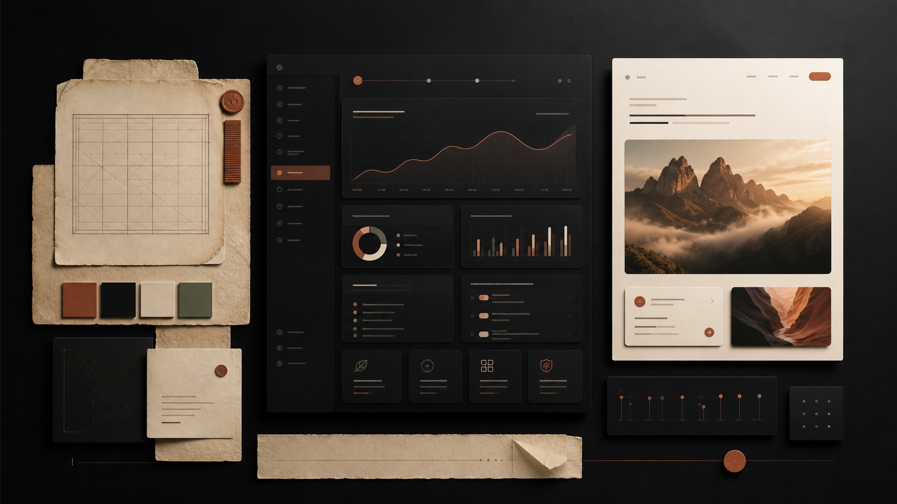
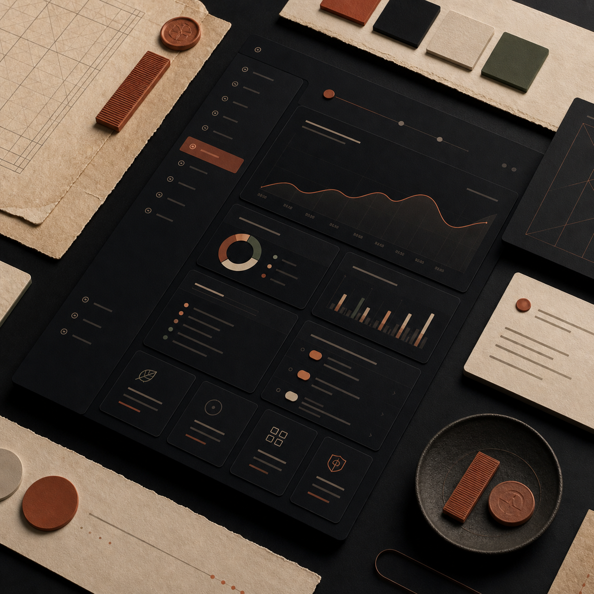

The page can carry rich visuals without abandoning the system: dark surface, warm paper, terracotta accent, exact spacing.
DESIGN.md applied
Dark-first workbench, not a generic dashboard.
This page keeps the original QA meaning but now follows the local design rules: quiet surface panels, tight controls, clear evidence, compact metrics, and a single primary action.


0
new color systems
6px
control radius
1
primary accent
The page background is void, panels use surface, and the accent appears only on the primary action.
Panels and controls use the documented radii with borders instead of shadows or glass effects.
The layout reads as a practical checklist with metrics and evidence, not a marketing card stack.